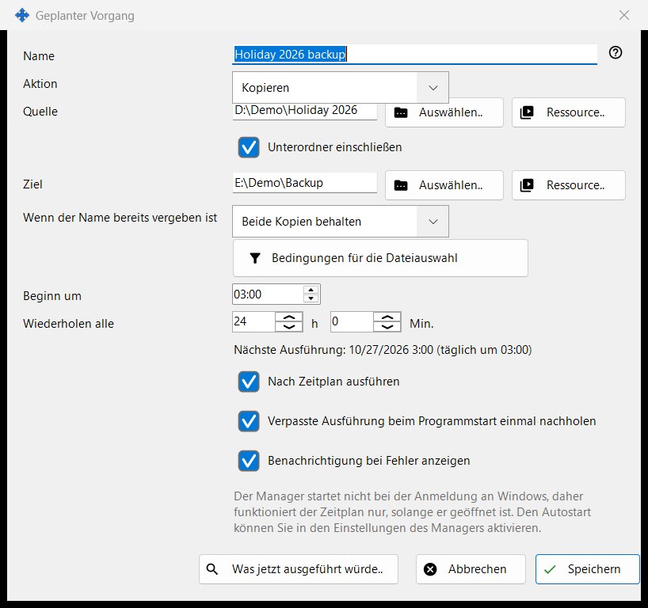
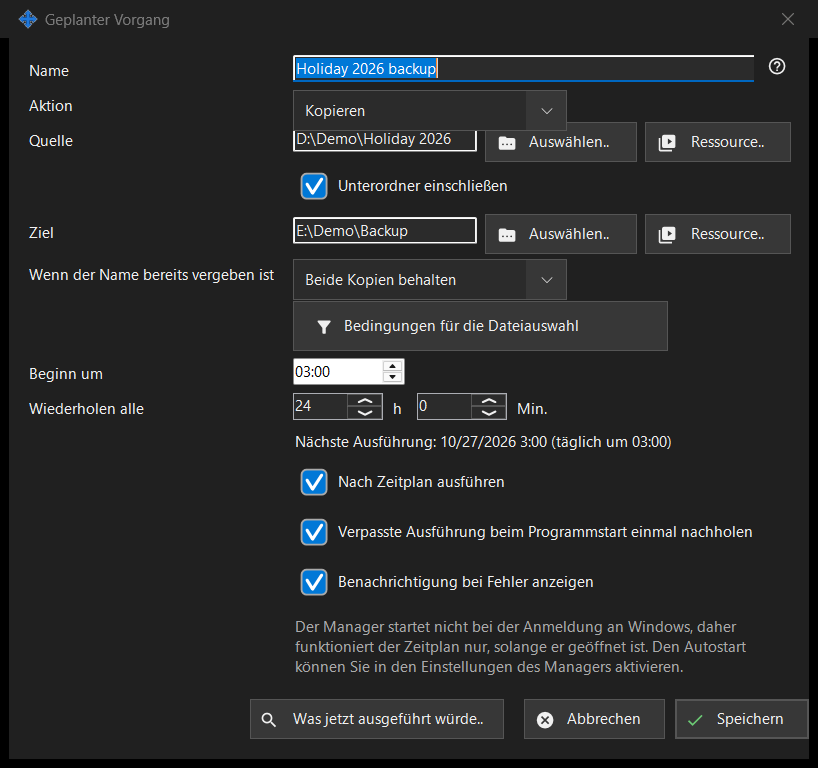

Geplanter Vorgang
Verwendungszweck
Bearbeitet einen geplanten Dateivorgang: Dateien nach einem wiederkehrenden Zeitplan von einer Quelle in ein Ziel kopieren, verschieben, löschen oder archivieren. Er öffnet sich über «Neu..» oder «Bearbeiten..» auf der Seite «Geplante Dateivorgänge» der Einstellungen von Share Manager und über den Ordnermenüeintrag des Viewers «Vorgang für diesen Ordner planen..», der diesen Ordner als Quelle einträgt.


In dieser Reihenfolge
- Geben Sie einen Namen ein und wählen Sie die Aktion.
- Legen Sie die Quelle fest, bei Kopieren, Verschieben und Archivieren auch das Ziel, mit «Auswählen..», «Ressource..» oder «Über Google Drive».
- Wählen Sie bei Kopieren und Verschieben, was geschieht, «Wenn der Name bereits vergeben ist».
- Öffnen Sie «Bedingungen für die Dateiauswahl», um die Dateien einzugrenzen.
- Legen Sie «Beginn um» und «Wiederholen alle» fest und lassen Sie «Nach Zeitplan ausführen» angehakt.
- Prüfen Sie «Was jetzt ausgeführt würde..» und klicken Sie auf «Speichern».
Die Elemente
Aktion und Namenskonflikte
Die Aktion ist Kopieren, Verschieben, Löschen oder Archivieren, und das Fenster zeigt nur die Zeilen, die diese Aktion braucht: Löschen hat kein Ziel; «Wenn der Name bereits vergeben ist» (Überspringen, Überschreiben, Beide Kopien behalten) erscheint nur bei Kopieren und Verschieben; «Originaldateien nach Prüfung des Archivs löschen» erscheint nur bei Archivieren und entfernt die Originale erst, nachdem das Archiv zurückgelesen und geprüft wurde.
Quelle und Ziel
Geben Sie einen vollständigen Pfad ein oder klicken Sie auf «Auswählen..». «Ressource..» wählt einen SFTP-Server oder Netzwerkordner aus der Ressourcenliste des Viewers und wird für Archivieren nicht angeboten, das nur gewöhnliche Ordner und Google Drive annimmt. «Über Google Drive» erscheint nur, wenn Sie bei Drive angemeldet sind oder diese Seite es bereits nutzt. Ist «Unterordner einschließen» aus, werden nur die Dateien des Quellordners selbst verarbeitet. «Speichern» lehnt System- und Programmordner sowie ein Ziel ab, das mit der Quelle identisch ist oder in ihr liegt, und sagt, was nicht stimmt.
Dateien löschen
Wenn Dateien entfernt werden (Löschen oder Archivieren mit der Option für die Originale), sagt die Zeile «Löschen: ..», wohin sie gehen: in den Papierkorb oder endgültig mit dem Grund, zum Beispiel dass ein Netzwerk- oder Wechseldatenträger keinen Papierkorb hat. Bei einem solchen Vorgang speichert Enter nicht; klicken Sie bewusst auf «Speichern». Ein geplanter Lauf stellt nie Fragen und protokolliert, wohin gelöschte Dateien gegangen sind.
Bedingungen für die Dateiauswahl
Das Feld öffnet sich von selbst, wenn die Bedingungen von den Standardwerten abweichen. Dateitypen: Alle Dateien, Bilder, Audio, Video, Dokumente («Alle Dateien» schaltet die anderen vier aus). Geändert: Gesamter Zeitraum, Neu seit der letzten Ausführung, Letzte Stunde, Letzte 24 Stunden. «Namensmaske» und «Nach Maske ausschließen» nehmen mehrere Masken getrennt durch ein Semikolon an, zum Beispiel *.jpg;IMG_??.png, verglichen mit dem Dateinamen. «Älter als» und «Jünger als» werden in Tagen und Stunden angegeben, «Größer als» und «Kleiner als» in MB. «Versteckte Dateien und Systemdateien einschließen» ist standardmäßig aus.
Zeitplan
«Beginn um» legt die Tageszeit fest und «Wiederholen alle» das Intervall in Stunden und Minuten; eine ganze Zahl von Tagen wiederholt sich zur selben Uhrzeit. Die Zeile darunter zeigt «Nächste Ausführung: Zeit (Regel)» oder «Der Zeitplan ist ausgeschaltet: Der Vorgang wird nur manuell ausgeführt.» «Verpasste Ausführung beim Programmstart einmal nachholen» und «Benachrichtigung bei Fehler anzeigen» sind getrennte Optionen. Eine weitere Zeile gibt an, dass der Zeitplan nur funktioniert, solange Share Manager läuft, und ob er bei der Windows-Anmeldung startet; nichts in diesem Fenster ändert den Autostart.
Vorschau und Speichern
«Was jetzt ausgeführt würde..» listet die Dateien auf, die der Vorgang verarbeiten würde, und ändert nichts; ein Lauf braucht sie nicht. «Speichern» sichert den Vorgang oder listet auf, was korrigiert werden muss. «Abbrechen» verwirft Ihre Änderungen.
Managereinstellungen · SFTP-Freigabeeinstellungen · Einstellungen des Austauschservers